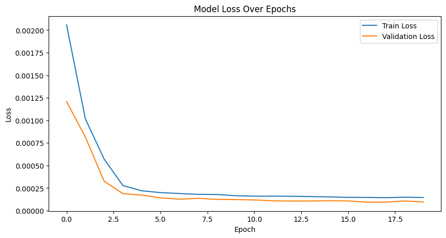
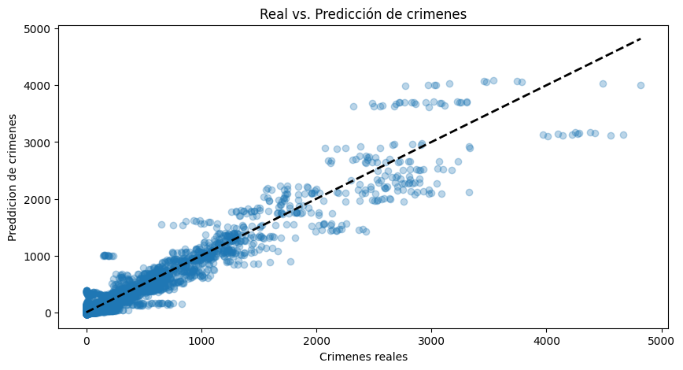

Módelo por Busqueda de Hiper-parámetros
Total params: 280,145 (1.07 MB)
Trainable params: 280,145 (1.07 MB)
Non-trainable params: 0 (0.00 B)
Métricas de Entrenamiento
Para el entrenamiento del modelo, se normalizaron los datos de los estados, municipios y la fecha.
Para la fecha, se separó en año y meses. En el caso de los meses, se utilizó las funciones de seno y coseno para generar características que permitieran al modelo entender la naturaleza periódica de estos datos. En cambio, al año se le aplicó una normalización estándar.
Debido a la gran cantidad de muestras en los municipios, se aplicó una capa de embedding para no incrementar la complejidad del modelo exponencialmente. Para ello, se utilzó un LabelEncoder que transforma etiquetas categóricas en valores numéricos, y posteriormente se pasaron estos valores a la capa de embedding.


Observaciones
Al analizar el modelo se puede ver mediante la curva de pérdida que generaliza relativamente bien, sin embargo, al analizar la gráfica de valores reales vs. su predicción, se evidencia que hay valores que el modelo no predice con exactitud, especialmente cuando el índice de violencia es alto.
Areas de Oportunidad
- Reducir el proyecto de un enfoque nacional a estatal. Existe mucha variabilidad en el índice de violencia según el estado, y factores como economía, población, clima, y costumbres haciendo que le sea difícil al modelo generalizar. Aislar el problema por estado puede ayudar a capturar mejor las tendencias.
- Introducir datos que tengan correlación con el índice de violencia podría aumentar la precisión del modelo.
- Acontecimientos como la pandemia de COVID-19 también afectan los resultados. El modelo actual no toma esto en cuenta, por lo que sería importante incorporarlo.
- Probar diferentes arquitecturas de redes neuronales podría ayudar a comparar y validar mejoras en el rendimiento.